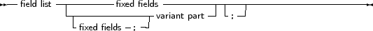

Free Pascal supports fixed records and records with variant parts. The syntax diagram for a record type is
_________________________________________________________________________________________________________Record types

___________________________________________________________________
So the following are valid record types declarations:
Type
Point = Record X,Y,Z : Real; end; RPoint = Record Case Boolean of False : (X,Y,Z : Real); True : (R,theta,phi : Real); end; BetterRPoint = Record Case UsePolar : Boolean of False : (X,Y,Z : Real); True : (R,theta,phi : Real); end; |
The variant part must be last in the record. The optional identifier in the case statement serves to access the tag field value, which otherwise would be invisible to the programmer. It can be used to see which variant is active at a certain time1 . In effect, it introduces a new field in the record.
Remark: It is possible to nest variant parts, as in:
Type
MyRec = Record X : Longint; Case byte of 2 : (Y : Longint; case byte of 3 : (Z : Longint); ); end; |
By default the size of a record is the sum of the sizes of its fields, each size of a field is rounded up to a power of two. If the record contains a variant part, the size of the variant part is the size of the biggest variant, plus the size of the tag field type if an identifier was declared for it. Here also, the size of each part is first rounded up to two. So in the above example:
If a typed file with records, produced by a Turbo Pascal program, must be read, then chances are that attempting to read that file correctly will fail. The reason for this is that by default, elements of a record are aligned at 2-byte boundaries, for performance reasons.
This default behaviour can be changed with the {$PACKRECORDS N} switch. Possible values for N are 1, 2, 4, 16 or Default. This switch tells the compiler to align elements of a record or object or class that have size larger than n on n byte boundaries.
Elements that have size smaller or equal than n are aligned on natural boundaries, i.e. to the first power of two that is larger than or equal to the size of the record element.
The keyword Default selects the default value for the platform that the code is compiled for (currently, this is 2 on all platforms) Take a look at the following program:
Program PackRecordsDemo;
type {$PackRecords 2} Trec1 = Record A : byte; B : Word; end; {$PackRecords 1} Trec2 = Record A : Byte; B : Word; end; {$PackRecords 2} Trec3 = Record A,B : byte; end; {$PackRecords 1} Trec4 = Record A,B : Byte; end; {$PackRecords 4} Trec5 = Record A : Byte; B : Array[1..3] of byte; C : byte; end; {$PackRecords 8} Trec6 = Record A : Byte; B : Array[1..3] of byte; C : byte; end; {$PackRecords 4} Trec7 = Record A : Byte; B : Array[1..7] of byte; C : byte; end; {$PackRecords 8} Trec8 = Record A : Byte; B : Array[1..7] of byte; C : byte; end; Var rec1 : Trec1; rec2 : Trec2; rec3 : TRec3; rec4 : TRec4; rec5 : Trec5; rec6 : TRec6; rec7 : TRec7; rec8 : TRec8; begin Write (’Size Trec1 : ’,SizeOf(Trec1)); Writeln (’ Offset B : ’,Longint(@rec1.B)-Longint(@rec1)); Write (’Size Trec2 : ’,SizeOf(Trec2)); Writeln (’ Offset B : ’,Longint(@rec2.B)-Longint(@rec2)); Write (’Size Trec3 : ’,SizeOf(Trec3)); Writeln (’ Offset B : ’,Longint(@rec3.B)-Longint(@rec3)); Write (’Size Trec4 : ’,SizeOf(Trec4)); Writeln (’ Offset B : ’,Longint(@rec4.B)-Longint(@rec4)); Write (’Size Trec5 : ’,SizeOf(Trec5)); Writeln (’ Offset B : ’,Longint(@rec5.B)-Longint(@rec5), ’ Offset C : ’,Longint(@rec5.C)-Longint(@rec5)); Write (’Size Trec6 : ’,SizeOf(Trec6)); Writeln (’ Offset B : ’,Longint(@rec6.B)-Longint(@rec6), ’ Offset C : ’,Longint(@rec6.C)-Longint(@rec6)); Write (’Size Trec7 : ’,SizeOf(Trec7)); Writeln (’ Offset B : ’,Longint(@rec7.B)-Longint(@rec7), ’ Offset C : ’,Longint(@rec7.C)-Longint(@rec7)); Write (’Size Trec8 : ’,SizeOf(Trec8)); Writeln (’ Offset B : ’,Longint(@rec8.B)-Longint(@rec8), ’ Offset C : ’,Longint(@rec8.C)-Longint(@rec8)); end. |
The output of this program will be :
Size Trec1 : 4 Offset B : 2
Size Trec2 : 3 Offset B : 1 Size Trec3 : 2 Offset B : 1 Size Trec4 : 2 Offset B : 1 Size Trec5 : 8 Offset B : 4 Offset C : 7 Size Trec6 : 8 Offset B : 4 Offset C : 7 Size Trec7 : 12 Offset B : 4 Offset C : 11 Size Trec8 : 16 Offset B : 8 Offset C : 15 |
And this is as expected:
Free Pascal supports also the ’packed record’, this is a record where all the elements are byte-aligned. Thus the two following declarations are equivalent:
{$PackRecords 1}
Trec2 = Record A : Byte; B : Word; end; {$PackRecords 2} |
and
Trec2 = Packed Record
A : Byte; B : Word; end; |
Note the {$PackRecords 2} after the first declaration !